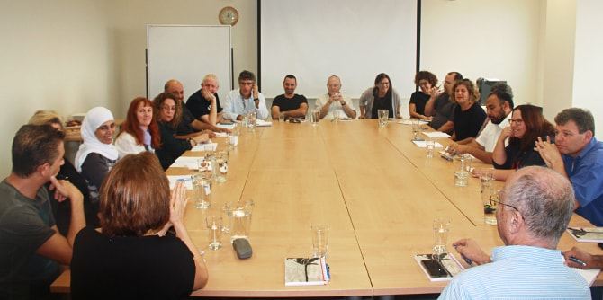

The Mandel Center for Leadership in the Negev is leading a new initiative called “Negev Lab,” a forum of leaders and key figures from the Negev who are engaging in shared study and inspiration on issues related to local culture and artistic creativity. The series of meetings, led by Dr. Ruth Calderon and Dr. Adi Nir Sagi, provides an opportunity for open and wide-ranging discussion of cultural growth and quality of life in the Negev that focuses on the “big picture."
The guest speaker at the first session, held on November 17, was author Meir Shalev, who spoke about the process of writing his novel In His House in the Wilderness. Shalev described the experience of being a writer in the Negev as arriving at a place where an author is able to think deeply about his or herself, the world of nature, and the place itself. The participants described the Negev as a flourishing place in which it is possible to nurture new forms of cultural expression and to think about local identity and culture, based on familiarity with different people and communities.
The participants broadly agreed that the Negev has seen a positive trend of strong growth in the arts and in culture in recent years, but also raised a fair number of challenges, underlining the importance of fostering local cultural leaders.

{kind=link}